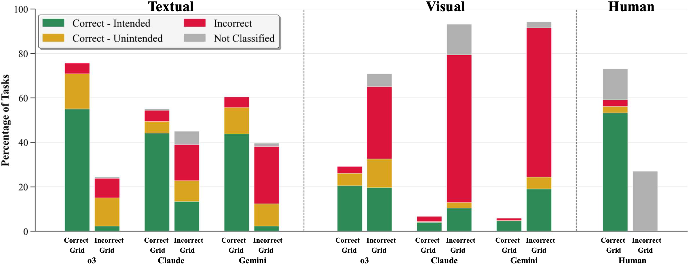
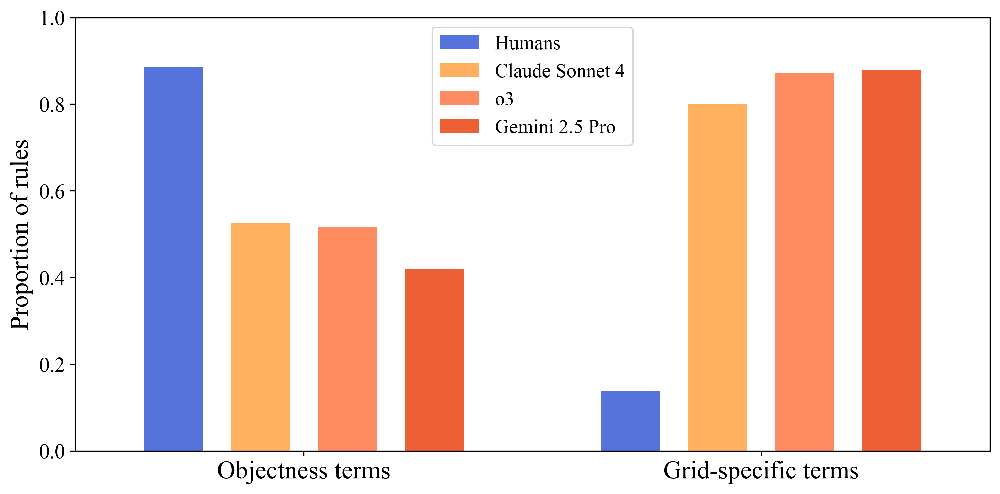
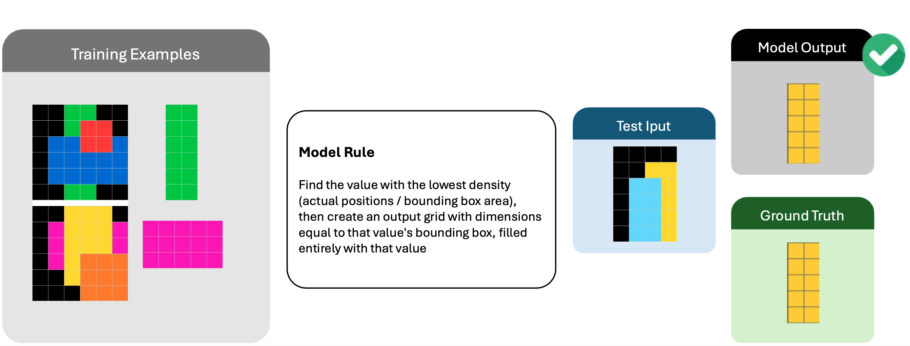
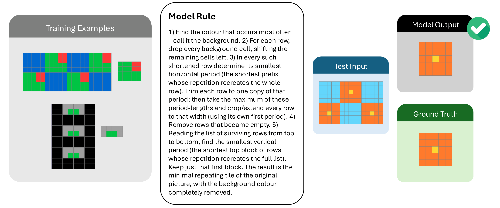
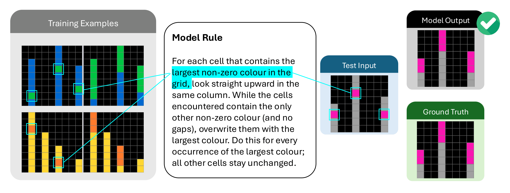

Distinguishing Performance From Competence in Evaluations of Humanlike Abstract Reasoning
NeurIPS 2026 (Evaluations and Datasets Track)
Abstract
AI reasoning models have exceeded human performance on the ARC-AGI-1 benchmark, but does that mean state-of-the-art models have the underlying competence—humanlike abstract reasoning—the benchmark was designed to test? Here we investigate the abstraction abilities of AI models using the closely related but simpler ConceptARC benchmark. Our evaluations vary input modality (textual vs. visual), use of external Python tools, and reasoning effort. Beyond output accuracy, we evaluate the natural-language rules that models generate to explain their solutions, enabling us to assess whether models recognize the abstractions that ConceptARC was designed to elicit. We show that the best models' rules are frequently based on less abstract, more domain-specific concepts, capturing intended abstractions considerably less often than humans. In the visual modality, AI models' output accuracy drops sharply; however, our rule-level analysis reveals that a substantial share of their rules capture intended abstractions, even as the models struggle to apply these concepts to generate correct solutions. In short, we show that using performance (accuracy) alone can substantially overestimate AI competence in textual modalities while underestimating it in visual modalities—an illustration of the risk of mistaking performance for competence.
Key findings
We evaluate o3, o4-mini, Claude Sonnet 4, Gemini 2.5 Pro, GPT-4o, Llama 4 Scout and Qwen 2.5 VL 72B on the 480 tasks of ConceptARC (16 spatial and semantic concepts, 30 tasks each), with textual and visual inputs, low and medium reasoning effort, and with and without Python tools. We compare their outputs and rules with those of human participants.
o3 results are for medium reasoning effort with Python tools.
Accuracy and rule correctness diverge
We classify the natural-language rule behind each answer as correct-intended (it captures the intended abstraction), correct-unintended (it works on the demonstrations but is an unintended solution), or incorrect. With textual inputs, a sizeable share of the models' correct outputs come with rules that miss the intended abstraction. With visual inputs, output accuracy drops sharply, yet many incorrect outputs come with rules that do capture the intended abstraction.

Humans describe objects, models describe grids
ConceptARC builds on core-knowledge priors such as objectness. Most human rules are phrased in terms of objects, while the models' rules more often focus on colours, individual pixels and other low-level features of the grid.

Correct outputs from unintended rules
In each example below the model's output matches the ground truth, but its rule does not capture the intended abstraction.



Dataset viewer
Explore the dataset and model outputs in the browser.
Full data can be downloaded from the linked Hugging Face repository.
BibTeX
@inproceedings{beger2026distinguishing,
title = {Distinguishing Performance From Competence in Evaluations of Humanlike Abstract Reasoning},
author = {Beger, Claas and Yi, Ryan and Fu, Shuhao and Denton, Kaleda and Moskvichev, Arseny and Tsai, Sarah W. and Rajamanickam, Sivasankaran and Mitchell, Melanie},
booktitle = {Advances in Neural Information Processing Systems},
year = {2026}
}